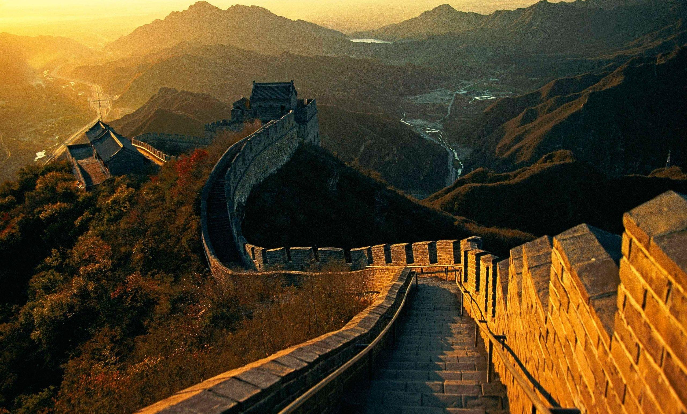

1. Great Wall of China
The Great Wall of China is a series of fortifications made of various materials, generally stone, brick, tamped earth, wood, and other materials, built along the northern borders of China.
2. Petra
Petra, originally known to its inhabitants as Raqmu, is a historical and archaeological city in southern Jordan.
3. Christ the Redeemer

Christ the Redeemer is an Art Deco statue of Jesus Christ in Rio de Janeiro, Brazil, created by French sculptor Paul Landowski.
4. Machu Picchu

Machu Picchu is a 15th-century Inca citadel located in the Eastern Cordillera of southern Peru on a mountain ridge.
5. Chichen Itza

Chichen Itza was a large pre-Columbian city built by the Maya people of the Terminal Classic period.
6. Roman Colosseum

The Colosseum is an oval amphitheater in the center of the city of Rome, Italy.
7. Taj Mahal

The Taj Mahal is an ivory-white marble mausoleum on the south bank of the Yamuna river in the Indian city of Agra.